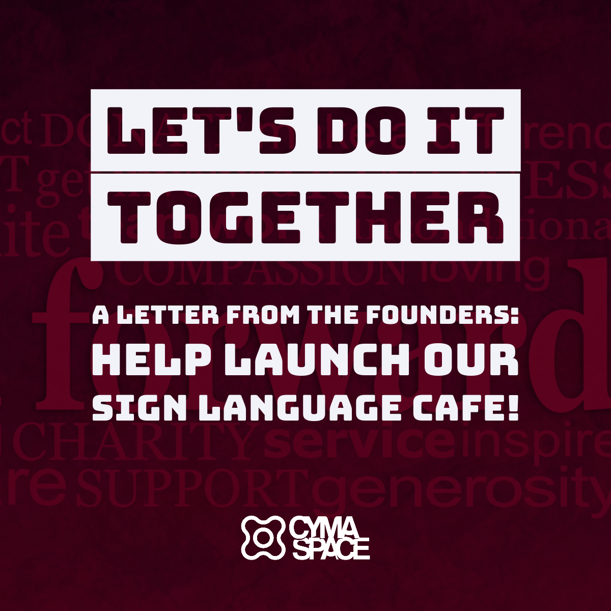
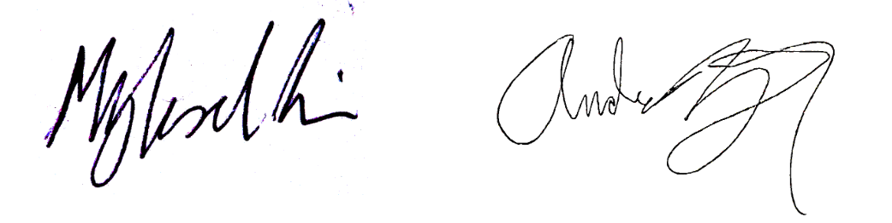
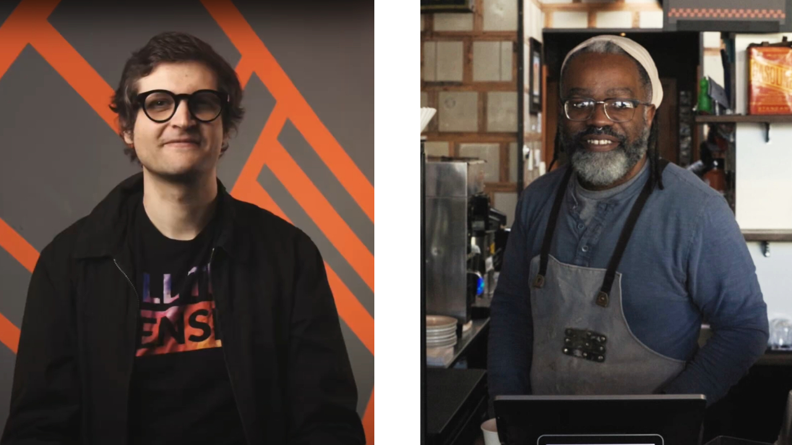

Dear Friends and Supporters,
Representing the CymaSpace team, known for making arts and culture accessible to all, we’re excited to introduce our newest endeavor: the Sign Language Café. This initiative is a natural extension of our mission of bridging communities through art, culture, and now, a unique culinary experience.
Since CymaSpace’s inception, our focus has been on inclusivity, transcending the barriers between sound and silence. The addition of Andre Gray six years ago significantly expanded our impact in the arts and disability sectors. Drawing on Andre’s culinary background, including his successful tenure at Crema Cafe, we’ve envisioned the Sign Language Café. More than a culinary venue, this café aims to deepen community engagement, foster connections, and support our sustainable involvement in Portland’s arts scene.
The Deaf and disability community often faces exclusion in cultural spaces. Our Sign Language Café, rooted in Universal Design and accessibility technology, will be a beacon of inclusivity. It’s designed to offer a disability-friendly environment, promoting communication and career opportunities for those often marginalized.
The café will not just be a space for workforce development, but a vibrant hub where the Deaf and hearing communities can engage in diverse communication and sensory experiences. Our walls will showcase the vibrant artworks of Deaf and disabled artists, celebrating Deaf artistic expression with an array of cultural activities. From Sign Language Poetry Slams to DJ nights and family-friendly events (SignKids: ASL Dungeons & Dragons night, here we come!). Aligning with our broader mission, these projects are only scratching the surface of what we have planned. Ultimately, the café will be the cornerstone of our future endeavors to elevate Deaf and disability artists.
Your support is crucial in making this vision a reality. By donating, you are directly empowering the Deaf and disability community. We are thankful to those who have generously donated to support our work. Together, we will create a space where diversity is not just accepted but celebrated.
With gratitude,
Myles de Bastion & Andre Gray

